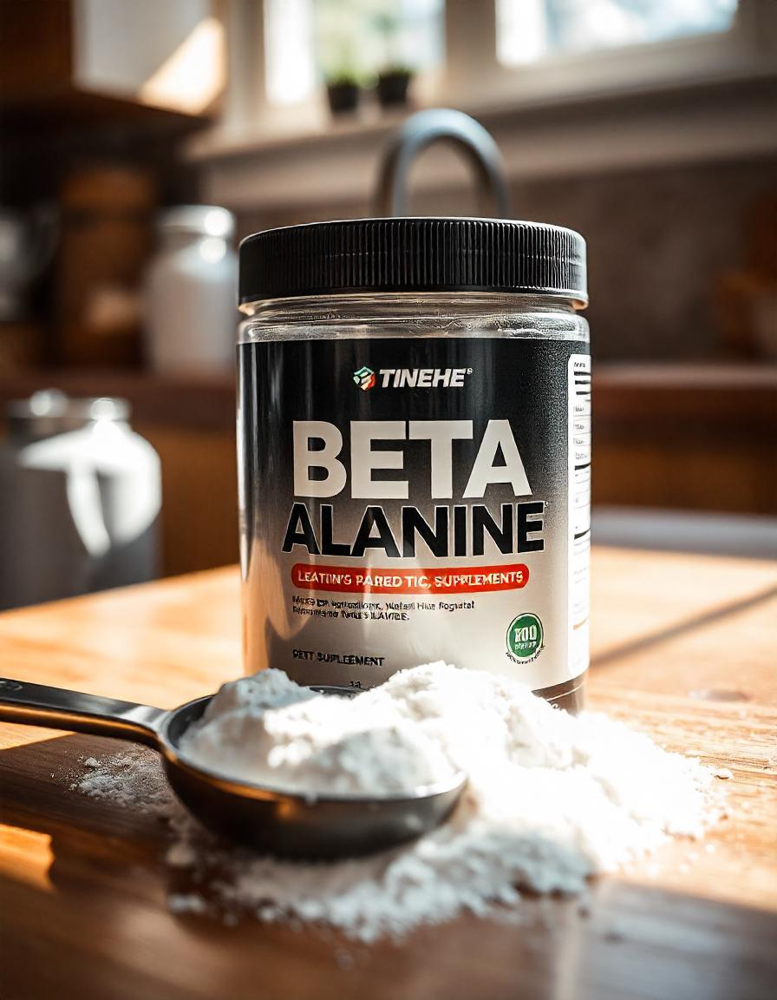

A Beta-Alanina é um aminoácido não essencial que tem sido amplamente utilizado por atletas e praticantes
de atividades físicas intensas para melhorar a performance, aumentar a resistência muscular e retardar a
fadiga durante os treinos.
Benefícios da Beta-Alanina:
- Melhora a resistência muscular durante exercícios de alta intensidade.
- Reduz a sensação de cansaço e fadiga muscular.
- Aumenta os níveis de carnosina nos músculos, o que ajuda a tamponar a acidez e melhorar a
performance em atividades de explosão e força.
- Potencializa os treinos de musculação e outras atividades físicas de resistência.
- Ajudar a melhorar o tempo até a exaustão, permitindo realizar mais repetições e prolongar a duração
dos exercícios.
Onde Encontrar a Beta-Alanina
A Beta-Alanina pode ser encontrada em lojas especializadas em suplementos alimentares, como:
- Loja X - Rua das Suplementos, 123
- Farmácia Y - Avenida da Saúde, 456
- Online: Sites como Mercado Livre, Amazon e lojas especializadas em nutrição esportiva.
Como Tomar a Beta-Alanina
A dosagem recomendada de Beta-Alanina depende das necessidades individuais e do tipo de atividade física.
A forma mais comum de consumo é:
- De 2 a 5 gramas de Beta-Alanina por dia, geralmente divididos em doses menores para evitar o efeito
de formigamento (parestesia).
- É melhor tomar Beta-Alanina cerca de 30 minutos antes do treino para maximizar os benefícios durante
a atividade física.
- Ela pode ser misturada com outros suplementos, como creatina ou whey protein, para um efeito
potencializado no treino.
Recomenda-se começar com uma dose menor e aumentar gradualmente, para evitar o efeito colateral de
formigamento, que é temporário e inofensivo.
Como é Produzida a Beta-Alanina
A produção de Beta-Alanina envolve a síntese do aminoácido a partir de fontes naturais ou processos
laboratoriais. O processo de produção inclui:
- Extração ou síntese de Beta-Alanina a partir de precursores como o ácido aspártico.
- Processamento para garantir a pureza do suplemento e sua forma de fácil consumo (pó ou cápsulas).
- Testes de qualidade e pureza, para garantir que o suplemento esteja livre de contaminantes e que
tenha a dose correta do ingrediente ativo.
Esse processo assegura que a Beta-Alanina seja segura, eficaz e de alta qualidade para os consumidores.